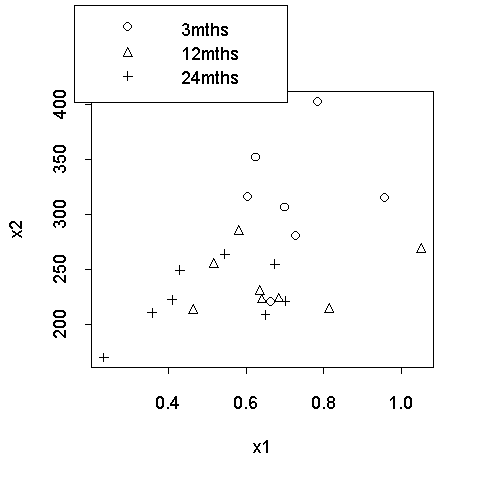

| / Home |
Keywords: analysis of covariance, spurious correlation.
The data consist of measurements (x1, x2, Age in months) on 23 babies, collected in the Faculty of Medicine at the University of Hong Kong. It would be of great medical interest to find a relationship between x1 and x2. However, any correlation between them is likely spurious because both x1 and x2 tend to increase with age. See Chris Lloyd's original mailing to the ANZStat mailing list discussion.
Data File (tab delimited text)
Professor Chris Lloyd, University of Hong Kong. See his original mailing to the ANZStat mailing list discussion.
|  | x2 is independent of x1 given Age. In fact, as the ANOVA belows shows, the dependence on Age is nearly linear. |
Analysis of Variance Table
Response: x2
Terms added sequentially (first to last)
Df Sum of Sq Mean Sq F Value Pr(F)
Age 1 25928.03 25928.03 15.68836 0.0010093
as.factor(Age) 1 6420.35 6420.35 3.88479 0.0652303
x1 1 2098.36 2098.36 1.26966 0.2754847
as.factor(Age):x1 2 515.02 257.51 0.15581 0.8569284
Residuals 17 28095.76 1652.69
|
Home - About Us -
Contact Us Copyright © Gordon Smyth |